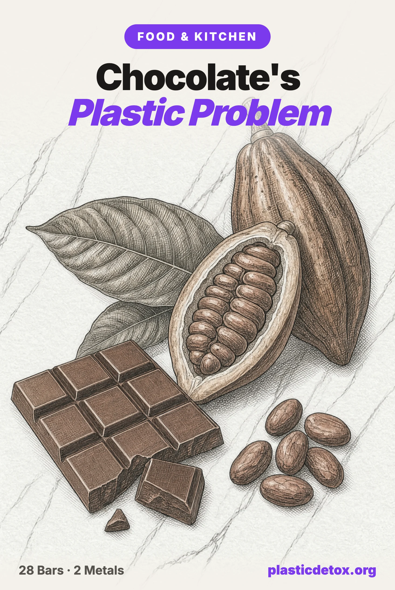

Chocolate's Problem: Plastic, Lead, and Cadmium (2026)

Consumer Reports sent 28 dark chocolate bars to an independent lab in 2022 and detected both lead and cadmium in every one of them. For 23 of the 28, an ounce a day was enough to exceed California's own legal threshold for at least one of the two metals, the level that by law has to trigger a cancer and reproductive harm warning label. This is not a new scare or a single bad batch. It is a decade old, heavily litigated, extensively tested problem that the chocolate industry itself has funded research into and still has not fixed. Here is what the actual numbers show, brand by brand, and what to do with that information.
The 30 Second Summary
- Lead and cadmium turned up in all 28 dark chocolate bars Consumer Reports tested. Twenty three broke California's own legal threshold for at least one metal with a one ounce serving, five broke it for both.
- The two metals get into cacao through completely different routes. Cadmium is absorbed from the soil as the tree grows. Lead lands on the outside of the bean as it dries in the open, picked up from dust and dirt, often near roads.
- Organic is not a shortcut to clean. Several of the worst results, including Alter Eco, Equal Exchange, Endangered Species and Theo, were organic certified. Organic rules govern pesticides, not heavy metals.
- This has been litigated since 2014 and is still not resolved. A 2018 settlement with 31 chocolate makers funded independent research and set the thresholds Consumer Reports later tested against. Hershey's own products have failed two separate rounds of independent testing since.
- Five bars tested meaningfully lower than the rest. One each from Mast, Taza and Valrhona, and two from Ghirardelli (86% and Twilight Delight), though none was a clean, non detect result.
- This is also a plastic problem, not just a metals one. Chocolate is nearly half fat, the worst case pairing for plastic contact, and mineral oil and phthalates have both been measured migrating from wrappers into chocolate. Hot cocoa K-Cup pods use the same mechanism shown to shed billions of nanoplastic particles per cup in coffee pods.
1. The Plastic Side: Wrappers, Mineral Oil, and Hot Cocoa Pods
Chocolate is close to half fat by weight, cocoa butter, and fat is the single most aggressive thing there is at pulling chemicals out of a plastic. Under the same materials standard we hold every product on this site to, a fatty, unheated food sitting in direct plastic contact for weeks or months is already a caution against a plain polyolefin wrapper and a fail against PET, PVC, or polystyrene, the same tier as a lip balm or a butter tub, not the tier a dry powder like flour or the cinnamon we tested sits in. That is a completely different exposure question from lead and cadmium, and this article did not ask it the first time.
Most chocolate bars use two layers: a printed outer sleeve, usually paper, and an inner wrap directly against the chocolate, which is either true aluminum foil or a metallized plastic film that looks identical to foil in a product photo but is chemically a different thing. Foil is inert. A metallized film is a plastic base with a thin aluminum coating, and what it can shed depends on that base plastic, the same as any other wrapper. Almost no brand states which one is against the chocolate, including Mast, our own pick further down: its listing discloses a "100% recyclable paper" outer sleeve and says nothing about the inner layer. That silence is itself the finding under our own rules, not something we can wave away by looking at a photo. One brand is on record doing the opposite of the quiet, unhelpful thing: Hershey's confirms it dropped its classic foil wrap for a direct plastic film wrapper in 2003, trading the one packaging choice that would have kept the bar's fat away from plastic entirely for a longer shelf life.
Plastic free wrapper technology does exist, and it is not greenwashing. Alter Eco built the first home compostable candy wrapper in 2013, a cellulose film called Natureflex made from FSC certified eucalyptus and birch, and Equal Exchange wraps its bars in a similar wood pulp cellulose film. Both are genuinely plastic free where Hershey's is confirmed plastic. But a clean wrapper and a clean bar are two different checks, and this dataset makes that split obvious: Alter Eco's cadmium came back at 204 percent of California's limit, the second worst of all 28 bars tested, and Equal Exchange's at 120 percent. The two brands doing the most visible, most genuine work on packaging are not the two doing the best work on what is actually in the chocolate.
Cocoa powder itself is dry, and a dry powder sitting in a tin, tub, or bag is a low risk pairing under the same standard, the same conclusion we reached for ground cinnamon. The risk shows up the moment you add hot liquid, and for a growing share of hot cocoa drinkers that happens inside a single serve plastic pod. Swiss Miss and Starbucks both sell Keurig compatible hot cocoa K-Cups, built the same way a coffee K-Cup is: near boiling water forced through a sealed plastic capsule under pressure. We covered the coffee version of this in our guide to coffee without plastic: a 2020 McGill University study found a single plastic pod releases 2.3 to 7.9 billion nanoplastic particles and 1.2 to 17.8 million microplastic particles into one cup. Nobody has run that same test on a hot cocoa pod specifically, but the pod itself, not what is inside it, is what sheds under hot pressurized water, so there is no reason to expect a cocoa pod behaves differently from a coffee one built the same way.
The fix here does not require giving up hot cocoa, only the pod. Loose cocoa powder, whisked into hot milk or water heated on a stovetop or in a kettle and served in a ceramic mug, never touches a K-Cup shell at all. If a pod machine is what you have, the same reusable stainless steel capsules that work for coffee, covered in the article linked above, work for cocoa mix too.
2. Why Cacao Has Two Separate Metal Problems
Between 2019 and 2022, as part of the settlement described further down, researchers studied exactly how lead and cadmium get into cacao, and found they arrive by completely different routes. Cadmium is absorbed from the soil as the cacao tree grows, accumulating in the beans the same way heavy metals build up in root vegetables. That means it is baked in from the farm before the beans are ever touched by a processor, and it tends to rise as the tree ages.
Lead works differently. It is not inside the bean at all, but on its outer shell. Freshly picked beans test low for lead. But cacao beans are coated in a sticky pulp, and after harvest they are typically fermented and dried in the open air for days, on tarps, concrete patios, drying tables, or directly on the ground, sometimes along roadsides. During that time, lead laden dust and dirt, much of it from decades of leaded gasoline residue still present in soil, industrial pollution, and burning garbage or plastic, sticks to the bean's shell. "We collected beans on the ground that were heavily loaded with lead on the outer shell," said Michael J. DiBartolomeis, the toxicologist who led that research.
3. The Full Results: 28 Dark Chocolate Bars
Consumer Reports measured each bar against California's Proposition 65 maximum allowable dose level (MADL), the state's own legal threshold for how much lead or cadmium a food can expose someone to before a warning label is required by law. The bar for lead is 0.5 micrograms a day, for cadmium 4.1 micrograms a day, both applied to a one ounce serving. There is no federal limit for either metal in chocolate, so CR used California's figures because its scientists consider them the most health protective published numbers available. Results below 100 percent are under that legal threshold; anything at or above it is not just "high," it is over the line California itself uses to require a warning.
| Product | Lead (% of CA MADL) | Cadmium (% of CA MADL) |
|---|---|---|
| Mast Organic Dark Chocolate 80% Cocoa | 14% | 40% |
| Taza Organic Deliciously Dark Chocolate 70% Cacao | 33% | 74% |
| Ghirardelli Intense Dark Chocolate 86% Cacao | 36% | 39% |
| Beyond Good Organic Pure Dark Chocolate 70% Cocoa | 42% | 112% |
| Beyond Good Organic Pure Dark Chocolate 80% Cocoa | 42% | 138% |
| Equal Exchange Organic Extra Dark Chocolate 80% Cacao | 45% | 120% |
| Lindt Excellence Dark Chocolate 70% Cocoa | 48% | 116% |
| Scharffen Berger Extra Dark Chocolate 82% Cacao | 49% | 136% |
| Alter Eco Organic Dark Chocolate Classic Blackout 85% Cacao | 49% | 204% |
| Ghirardelli Intense Dark Chocolate Twilight Delight 72% Cacao | 61% | 96% |
| Valrhona Abinao Dark Chocolate 85% Cacao | 63% | 73% |
| Pascha Organic Very Dark Dark Chocolate 85% Cacao | 68% | 253% |
| Dove Promises Deeper Dark Chocolate 70% Cacao | 74% | 112% |
| Theo Organic Pure Dark Chocolate 70% Cocoa | 120% | 142% |
| Trader Joe's The Dark Chocolate Lover's Chocolate 85% Cacao | 127% | 229% |
| Tony's Chocolonely Dark Chocolate 70% Cocoa | 134% | 28% |
| Theo Organic Extra Dark Pure Dark Chocolate 85% Cocoa | 140% | 189% |
| Lily's Extremely Dark Chocolate 85% Cocoa | 143% | 101% |
| Green & Black's Organic Dark Chocolate 70% Cacao | 143% | 181% |
| Lily's Extra Dark Chocolate 70% Cocoa | 144% | 42% |
| Godiva Signature Dark Chocolate 72% Cacao | 146% | 25% |
| Chocolove Strong Dark Chocolate 70% Cocoa | 152% | 60% |
| Lindt Excellence Dark Chocolate 85% Cocoa | 166% | 80% |
| Endangered Species Bold + Silky Dark Chocolate 72% Cocoa | 181% | 31% |
| Trader Joe's Dark Chocolate 72% Cacao | 192% | 36% |
| Hu Organic Simple Dark Chocolate 70% Cacao | 210% | 56% |
| Chocolove Extreme Dark Chocolate 88% Cocoa | 240% | 83% |
| Hershey's Special Dark Mildly Sweet Chocolate | 265% | 30% |
Source: Consumer Reports, independent lab testing, December 2022, 28 dark chocolate bars. Figures are percent of California's Proposition 65 maximum allowable dose level for a one ounce serving, lead 0.5 mcg/day, cadmium 4.1 mcg/day. Green cells are the five lowest on both metals; none is a non detect, clean result. Sorted by lead level, ascending, matching how CR published it.
A pattern jumps out immediately: lead and cadmium do not move together. Hershey's Special Dark had the single worst lead reading of all 28, at 265 percent of the limit, five times over, but its cadmium was unremarkable at 30 percent. Pascha's cadmium was the worst of the set at 253 percent, while its lead sat under the threshold at 68 percent. Only five bars, Theo's Organic Pure Dark and Extra Dark, Trader Joe's Dark Chocolate Lover's, Lily's Extremely Dark, and Green & Black's, were high on both metals at once. A brand that reassures you about one number is not telling you about the other.
4. It Is Not Just Dark Chocolate
In October 2023, Consumer Reports widened the test to 48 products across seven categories: cocoa powder, chocolate chips, milk chocolate bars, dark chocolate, brownie mixes, chocolate cake mixes, and hot chocolate. Every single product had detectable lead and cadmium, and 16 of the 48 exceeded CR's threshold for at least one metal. As expected, dark chocolate and cocoa powder, which is essentially pure cocoa solids, tested worse than milk chocolate, which is diluted with sugar and milk.
None of the cocoa powders CR tested exceeded the cadmium threshold, but two did for lead. Hershey's Cocoa Naturally Unsweetened 100% Cacao tested at 125 percent of California's lead limit, second worst of the cocoa powders behind Droste Cacao Powder, which CR did not publish an exact figure for beyond naming it the highest. None of the five milk chocolate bars CR tested exceeded either threshold, but Hershey's Milk Chocolate Bar had the most lead of the five, at 67 percent, the highest in its category even while staying under the line.
5. A Decade of Lawsuits Did Not Fix It
This is not a new discovery. Between 2014 and 2017, As You Sow, a corporate accountability nonprofit, tested 469 chocolate products and found 285 of them, 61 percent, exceeded California's MADLs for lead and cadmium. It filed legal notices with more than 20 companies, including Trader Joe's, Hershey's, Mondelēz, Lindt, Whole Foods, Kroger, Godiva, See's Candies, and Mars. In 2018, that pressure produced a first of its kind settlement with 31 chocolate companies, including Cargill, Hershey, Mars, and Nestlé, who agreed to jointly fund an independent expert investigation into where the metals come from, how to lower them, and what levels should trigger a warning. That funded research, run through 2022, is the source of the two mechanisms described above.
The settlement produced research, not a fix. Consumer Reports' 2022 test ran four years after the settlement and found the same problem at the same scale. Hershey's response, through its CFO, was that the company "continue[s] to look for opportunities" to reduce heavy metals, without a firm, time bound commitment. A separate consumer class action against Hershey specifically, filed in December 2022 after CR's results, accused the company of deceptive marketing over three dark chocolate bars that broke the MADL. Hershey moved to dismiss in March 2023, arguing it never promised its chocolate was lead or cadmium free, only that it was safe to eat. The plaintiff voluntarily dropped the case in February 2024 without a settlement.
Lead Safe Mama, which runs its own independent testing program separate from Consumer Reports and As You Sow, has reached a similarly blunt conclusion after testing numerous cocoa powders and chocolate bars: it recommends cocoa and chocolate products be avoided entirely or significantly limited, because every product it has tested to date has come back positive for a concerning amount of cadmium, which it treats as a known carcinogen with no safe level of exposure.
6. Does Origin Actually Predict the Result?
Cadmium's mechanism, soil uptake, has a real geographic signal behind it. Cacao grown in Latin America, especially Peru, Ecuador, and Colombia, tends to carry markedly more cadmium than cacao grown in West Africa, sometimes two to ten times more, because much of the soil in those Latin American growing regions is young and volcanic, and volcanic soil runs naturally higher in cadmium. Ivory Coast and Ghana, which together grow the majority of the world's cacao and supply most mass market chocolate, sit on older, more depleted soil with a lower baseline.
That is a real pattern in the geology, but it does not cleanly predict which bar on a shelf will test worse, because almost no chocolate maker sources from one farm. Most blend beans from multiple origins and regions specifically to manage flavor, cost, and, increasingly, metal content. Taza's CEO told Consumer Reports that mixing beans from different origins is exactly how the company keeps its levels down, and Taza was one of the five lowest tested. Meanwhile As You Sow's own 2022 testing found Ojio Organic Cacao Nibs, sourced specifically from Peru, came back non detect for lead. Origin is a real input into the cadmium number, not a label you can read off a bag and trust.
7. Is Any Chocolate Actually Safe to Buy?
Judged against California's own Prop 65 threshold, the one legal standard that actually applies to this category, 23 of the 28 dark chocolate bars Consumer Reports tested cross the line that by law requires a warning label. That is not a marginal miss, several are two to five times over on at least one metal. Judged against the proposed federal bar we hold every other ingestible to (5 ppb for lead and cadmium), the situation is worse still: every single bar, including the five CR called relatively low, had detectable levels of both metals, and detectable at any level above 5 ppb is a finding under our own standard, not a pass.
So the honest answer is no, nothing in this dataset is a clean recommendation. The five lowest tested, one each from Mast, Taza and Valrhona and two from Ghirardelli, are meaningfully better than the other 23, most of which we would rate no better than skip under our own rules given how far over California's legal threshold they run. But "meaningfully better" is not the same as clean, and Lead Safe Mama's own position, that no chocolate or cocoa product it has tested clears the bar, is consistent with what CR's numbers show too.
8. What Actually Reduces Your Risk
Choose a lower cacao percentage for cadmium specifically. Cadmium tends to rise with cacao content, so a 70 percent bar is generally lower than an 85 percent bar of the same brand. Lead does not follow the same pattern, so this only helps with one of the two metals.
Alternate with milk chocolate. None of the five milk bars in CR's 2023 test broke either threshold. It carries a lot more added sugar too, so this is a trade, best used as an occasional swap rather than a daily habit.
Do not assume organic or "ethically sourced" means lower metals. Alter Eco, Equal Exchange, Endangered Species, and Theo are all organic and marketed on ethical sourcing, and all four are among the worst results in this dataset.
Treat dark chocolate as a treat, not a daily supplement. An occasional ounce is unlikely to cause immediate harm. The risk builds with the "a square a day for the antioxidants" habit.
Go easier during pregnancy and with young children. Both metals cross into fetal development, and a child's smaller body carries the same dose further.
Skip hot cocoa pods. Make it with loose cocoa powder and hot milk or water heated on a stovetop or kettle instead of a K-Cup, for the same reason we recommend skipping plastic coffee pods.
Do not let bars sit for months in a hot car or a sunny counter. Migration from a fatty food into its wrapper rises with heat and time, more than which wrapper a brand uses, since most do not disclose that anyway.
9. If You Are Buying Chocolate Anyway
10. Frequently Asked Questions
Does chocolate contain lead and cadmium?
Yes. Consumer Reports detected both lead and cadmium in all 28 dark chocolate bars it independently tested in 2022, and in every one of the 48 additional chocolate and cocoa products it tested in 2023. Twenty three of the original 28 bars exceeded California's Prop 65 maximum allowable dose level for at least one of the two metals with a one ounce serving, the legal threshold that triggers a mandatory warning label in that state.
Which chocolate brand has the least lead and cadmium?
In Consumer Reports' 2022 test, five of 28 dark bars tested relatively low for both metals: one each from Mast, Taza, and Valrhona, and two from Ghirardelli. Mast's Organic Dark Chocolate 80% Cocoa was the lowest of the entire set on both metals, at 14 percent of California's lead limit and 40 percent of its cadmium limit. None tested at non detect for either metal, so none is a clean pass, only the lowest measured.
Is dark chocolate worse than milk chocolate for heavy metals?
Generally yes, because both metals concentrate in cocoa solids and dark chocolate has more of them. In Consumer Reports' 2023 test, none of five milk chocolate bars exceeded its safety thresholds for either metal, while the majority of dark bars did. The exception worth knowing is Hershey's Milk Chocolate Bar, which had the most lead of the milk chocolates tested, at 67 percent of the limit, still under the threshold but the highest of its category.
Does organic chocolate have less lead and cadmium?
No. Consumer Reports found organic dark chocolate bars were just as likely as conventional ones to have concerning levels of both metals. Several of the worst results in its 2022 test, including Alter Eco, Equal Exchange, Endangered Species, and Theo, were organic certified. Organic certification governs pesticide and synthetic input use, not heavy metal contamination, which comes from the soil the cacao tree grew in and from dust picked up while the beans dried.
Is it safe to eat dark chocolate every day?
An occasional ounce is unlikely to cause immediate harm even from a higher testing bar. The risk is cumulative, frequent exposure over years, which is why Consumer Reports recommends treating dark chocolate as a treat eaten a few times a week rather than daily, choosing a bar that tested lower, alternating with milk chocolate, and being especially cautious during pregnancy and with young children, for whom the same dose carries more risk.
Does chocolate wrapper plastic get into the chocolate?
It can. Chocolate is nearly half fat, and fat is the most aggressive thing there is at pulling chemicals out of plastic packaging. Foodwatch's 2016 testing of 20 Christmas chocolates in Germany found detectable mineral oil hydrocarbons in 19 of them, traced to wrapper materials, and a separate peer reviewed study measured phthalates migrating into high fat foods including chocolate at levels that rose the longer the product sat in its packaging. Most brands do not disclose whether the inner wrapper against the chocolate is true foil or a metallized plastic film that looks identical.
Are hot cocoa K-Cup pods safe?
Hot cocoa K-Cups from Swiss Miss and Starbucks use the same single serve plastic pod format as coffee K-Cups, near boiling water forced through a sealed plastic capsule under pressure. A 2020 McGill University study found a single plastic coffee pod releases 2.3 to 7.9 billion nanoplastic particles into one cup; no test has been run on a hot cocoa pod specifically, but the pod material and brewing mechanism are identical, so there is no reason to expect a different result. Loose cocoa powder whisked into hot milk or water heated on a stovetop or kettle avoids the pod entirely.
Are there chocolate bars without plastic packaging?
Yes, and it is a real material, not a greenwashing claim. Alter Eco built the first home compostable candy wrapper in 2013 using Natureflex, a cellulose film made from FSC certified eucalyptus and birch, and Equal Exchange wraps its bars in a similar wood pulp cellulose film. Hershey's, by contrast, is on record dropping its classic foil wrap for a direct plastic film wrapper in 2003 to extend shelf life. But a plastic free wrapper says nothing about what is in the chocolate: Alter Eco's cadmium tested at 204 percent of California's legal limit, the second worst of the 28 bars in this dataset, and Equal Exchange's at 120 percent. Packaging and formula are two separate checks, and neither predicts the other.
Related Articles
- Cinnamon Brands Tested for Lead and Cadmium
The same two metal problem, in a different pantry staple, with a comparable brand by brand breakdown. - Microplastics in Salt, Sugar, and Pantry Staples
Where the "clean" wellness pantry brands test worst for lead and arsenic too. - Cleanest Protein Powder, Tested
Chocolate flavored protein carries the same cocoa solids risk, tested brand by brand. - Pesticides in Food 101
Where buying organic actually pays off, and where it does not touch the real risk. - Can You Detox Microplastics?
What the science says about clearing plastic particles from your body.